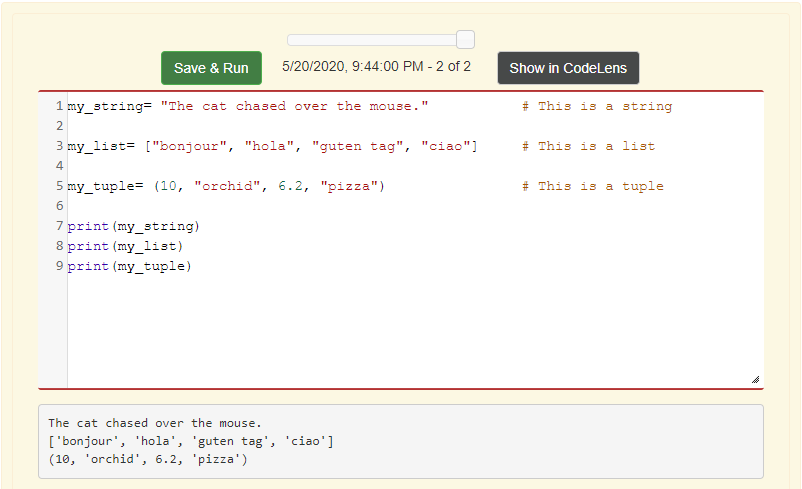
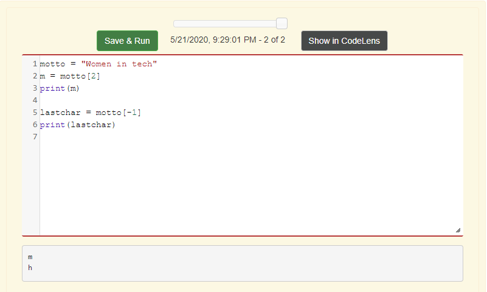
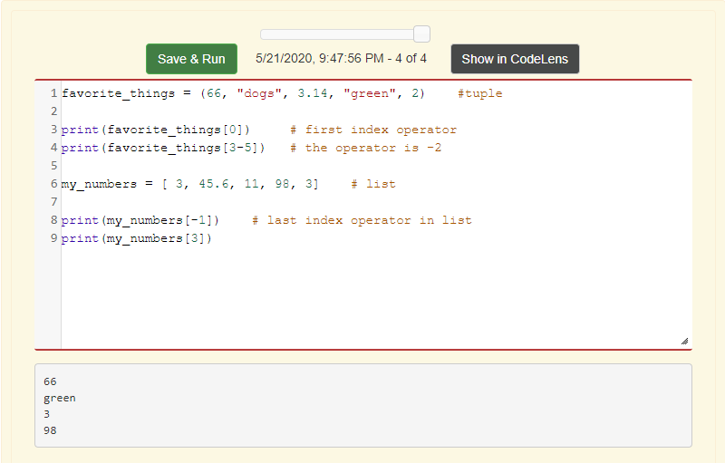
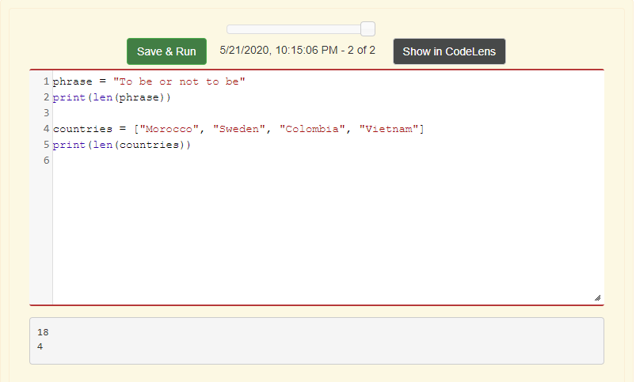
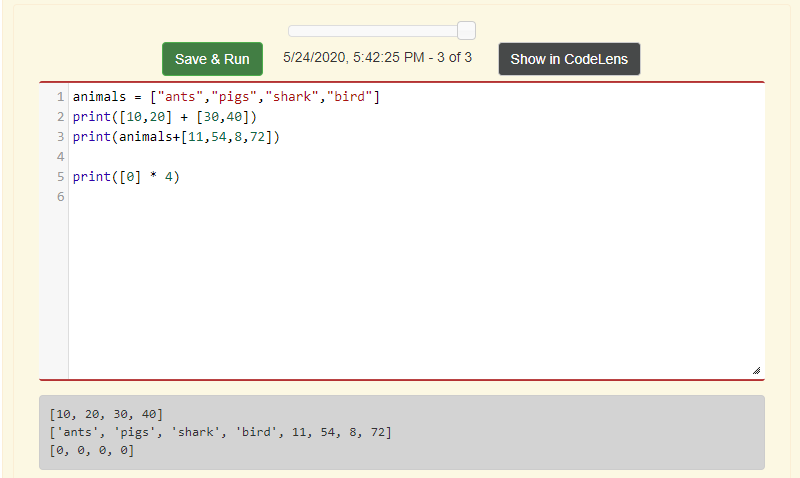
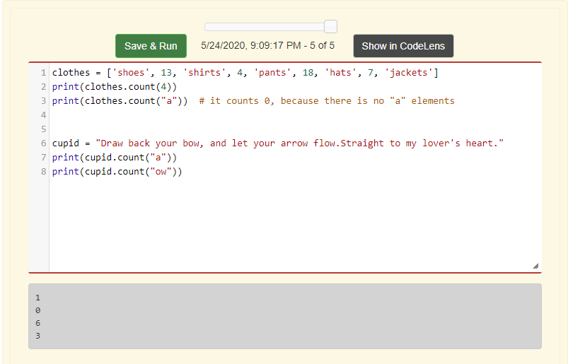
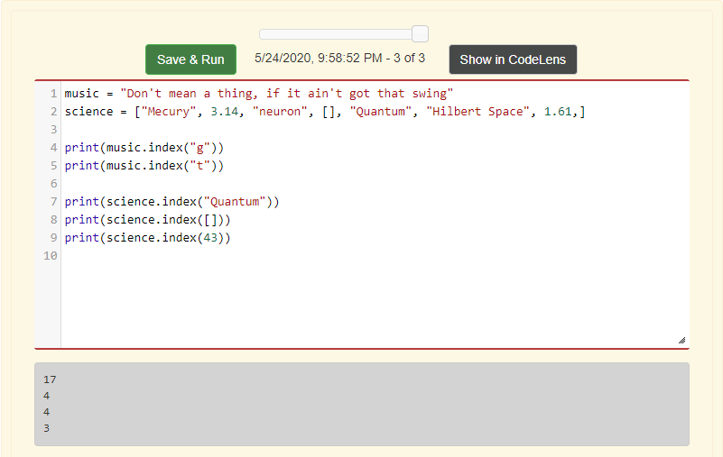
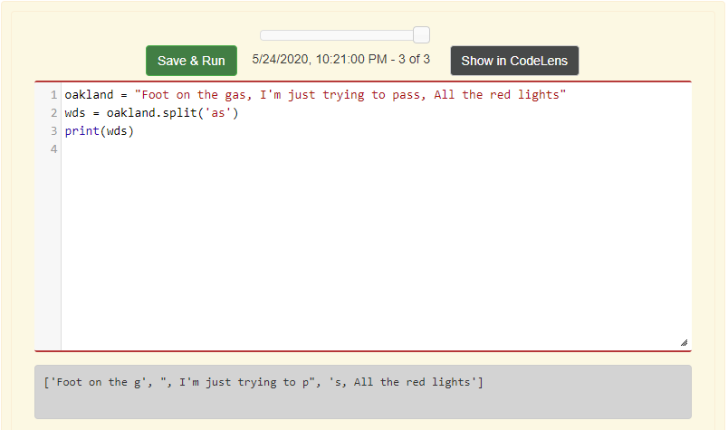
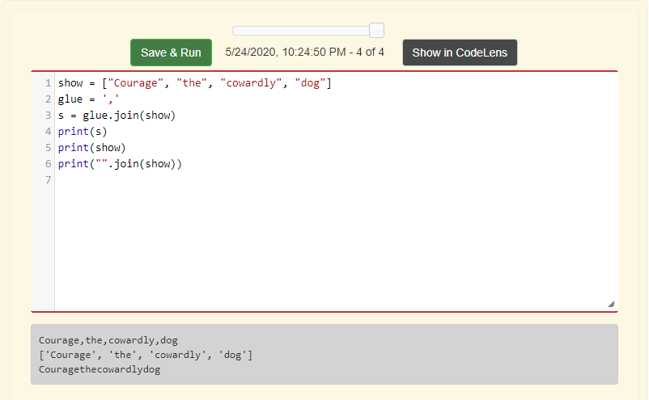

Chapter 6: Sequences
What is a Sequence?
A sequence is an orderly group of items that will be accessed in the same order as when they were first created. There are a few types of sequences, such as strings, lists and tuples.
What is a String?
A string is an organized set of characters. However, there can also be strings with no characters, which are called empty strings.
What is a List?
A list is an ordered group of various data types (integer, string, float), where the values inside the list are called the elements. Though lists can have different data types, it is advised to stick to only using one in each list. Because it's easier to deal with when using it or applying functions to the lists.
What is a Tuple?
A tuple is similar to a list, that is an organized set of data types, however with tuples, the programmer can have a mix of data types.
How are these sequence types applied?
What is a indexing operator?
An indexing operator is the element that the programmer is trying to access its position in a string. When accessing an element, the programmer has the option of counting and accessing the element from left to right, with the first element starting with number 0 and so on. While if the programmer wants to start from right(the end of the string) to left(start of the string), the element will start with the number -1 and etc.

In order to access the indexing operator, the programmer needs to first type the name of the string that they are accessing, and then with square brackets put the position number that they are trying to access.
Does the indexing operator apply to list and tuples?
Yes, they can. Like with strings, in order to access the indexing operator, the programmer needs to use square brackets, the name of the list, string or tuple and the position number.
What is the length function?
The length function is used to access the amount of characters in a string, list, tuple or dictionary.
What are slice operators?
A slice operator is a slice of a sequence. So think of it as selecting a slice of pie.
Now, to select a slice operator first the programmer needs to state at what position to start slicing, and then state when to end the slicing of the sequence. The start position begins with the index 0 and so on, and the end of the slice operator starts with the index operator 1.


What is concatenation and repetition?
Concatenate is a way to add strings together or list together. In order to add the strings or list together, the programmer needs to put a "+" in between the strings/lists.
Repetition in this case means that the data type is repeated, with using the "*" symbol, between the data type and the amount of types that the programmer wants the data type to be repeated.
What can be done with the count method?
The count method is used to count the amount of times a character or a group of characters appear in a string. Counting lists is different, because when the programmer assigns the computer to count a specific character/group of characters, it can only count the element that has that specific character or group of characters in the list. And not every time that the character appears in each element.
What is the index method?
The index method is used to find the position/index of the desired element. If the desired element appears in different places of the list or string, the computer will output the position of the first desired element that it reads. One thing to note is that Python starts the counting at 0, just like the index operator.
What is splitting & joining?
Splitting is a method used to split strings into lists, so it helps to convert strings into lists. It also can be used to split a string and remove a character or a group of characters.
Joining is sort of like the opposite of splitting, it is used to take a list and join all the elements into a string. One can also add a character or group of characters in between the list elements.
